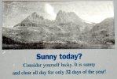
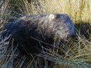
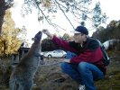
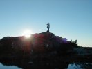
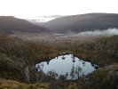
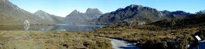

|
Back to storybook June
July
August |
June 18th: Wynyard (Cradle Mountain) |
|||
|
What a magnificent day (yes, I know I'm repeating myself :-)!
We woke up to an almost cloud free sky, but none of us were convinced that this would hold all day and certainly didn't trust the weather to be the same over Cradle Mountain where we had planned to drive today. I called a couple of numbers around Cradle Mountain. The first woman I talked to said it was a beautiful day and that we should come down. The next lady I got on the phone said the exact opposite. She said she couldn't see Cradle Mountain because  First we went to see Waldheim, a hut that the Austrian Gustav Weindorfer had built in 1912. Weindorfer's mission in life was to make this area a national park and luckily he succeeded. Walking through the adjacent rainforest was, as Chez put it, like walking through a scene from "The Lord of the Rings" - moss all over the place.
  Everybody at the Dove Lake car park was talking about the magnificent weather and that you only get a very few days like this a year. We heard the ranger saying, "It won't get better than this". Chez and Paul couldn't believe our luck when it comes to weather.

By now
 Before heading back home we made a short stop at the Cradle Mountain Lodge to see some possums that go there every night to get fed. Tasmanian Devils do show up once in while, but unfortunately not while we were there. We're sure that Grummy was disappointed that we didn't fly on this wonderful day, but flying would also have ment that we would have had to leave Cradle Mountain fairly early that afternoon to be able to get home before last light. There wouldn't have been time to do the hikes we did, to see the sun set and watch the animals coming out after dark. Taking the car was a good decision after all. 
| ||||
{kind=link}
{kind=link}
{kind=link}
{kind=link}
{kind=link}
{kind=link}